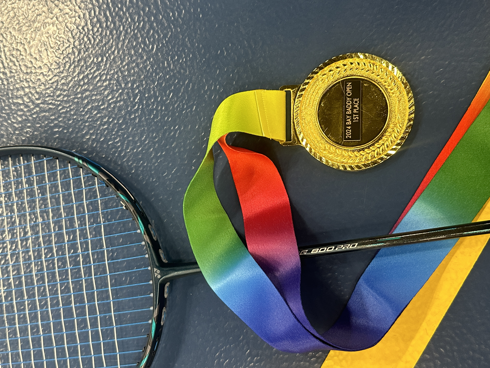

My Professional Journey & Skill Set

I am a former professional badminton player with a Master's degree in
Education, and I am currently transitioning into the tech industry.
After my athletic career, I developed a strong interest in software
development, which led me to pursue a boot camp focused on full-stack
web development. Through this experience, I am gaining proficiency in
HTML, CSS, JavaScript, and more, and I'm excited to apply my newly
acquired skills in real-world projects.
Passions & Pursuits

Outside of work, I am passionate about hiking and exploring nature.
Hiking allows me to disconnect, challenge myself, and build
resilience, similar to how I approach learning in the tech field. I
also have a strong athletic background as a former professional
badminton player, where I learned the importance of discipline, focus,
and teamwork—skills I continue to apply in my professional life.
Vision & Drive: Shaping My Career Path
I believe in continuous learning and the value of staying adaptable in
a rapidly changing field. My career goal is to combine my
problem-solving skills, work ethic, and passion for innovation to
contribute meaningfully to the tech industry. I’m excited about the
opportunity to join a dynamic team where I can collaborate, learn, and
grow as I work on challenging projects.
Who I Am: Values & Motivation
I am driven by challenges and motivated by the opportunity to make a
positive impact. Whether it's tackling a difficult coding problem or
navigating through a tough hike, I bring determination and a growth
mindset to everything I do. My diverse background, from competitive
sports to teaching and now tech, has shaped me into a resilient and
adaptable individual who thrives in both independent and team
settings.